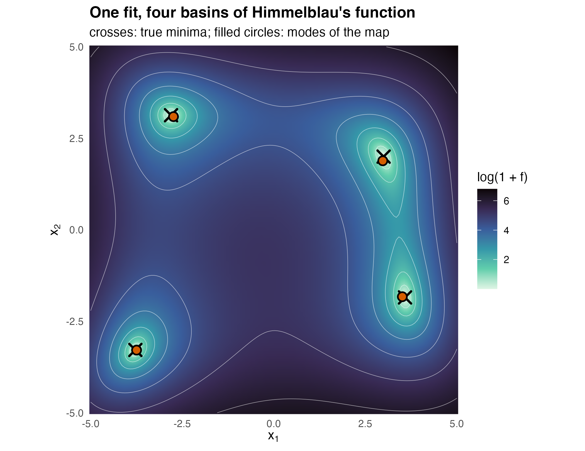

has_ggplot2 <- requireNamespace("ggplot2", quietly = TRUE)The problem
Calibrating a model means choosing values for its unknown parameters so that its output matches what was observed. Each choice is scored by a function called the objective, for example the sum of squared differences between the model output and the data. A lower score is a better fit, and the lowest point of the objective is its minimum.
The usual tool for this search is an optimiser, such as R’s
optim(). It starts from one point, moves downhill until it
can go no lower, and returns that single point. Many objectives have
several low valleys, called basins. The basin an optimiser ends in
depends on where it started. A single run gives no information about the
basins the optimiser never visited.
In calibration, one point is often not enough. Several quite different parameter settings may fit the data about equally well, and you need to know all of them before you report any one.
proxymix builds a map of the good regions of an objective instead. The map is a Gaussian mixture, a few normal distributions added together, with a peak over each low basin. A single fit gives the locations of the basins, and the height of each peak shows how low that basin goes.
Both objectives in this vignette have known minima, which lets you check the result.
Package capabilities
-
from_objective()builds the map. You supply the objective and a box, given as a lower and an upper limit for each parameter, inside which the optima are sought. -
gmm_modes()finds the peaks of the map, called modes, with the fixed-point search of Carreira-Perpiñán (2000). It returns their locations, the height of the map at each one, and how many distinct modes there are. -
ess_summary()reports the effective sample size of the fit, a check on whether the map can be trusted. - The map is an ordinary fitted mixture. The tools from Fitting a
proxy to a density you cannot sample also work on it.
dgmm()gives density values,rgmm()gives random draws, andgmm_marginalise()andgmm_conditionalise()give the distribution of one parameter on its own or with another held fixed.
Addressing the problem
From an objective to a distribution
For an objective , the formula , once scaled to integrate to one over the box, defines a distribution known as the Gibbs distribution. Here is a positive number called the temperature. Where is low, the formula is high, and the distribution puts most of its probability there. As falls, that probability gathers more tightly around the minima.
The formula can be evaluated at any point, but there is no direct way
to draw from the Gibbs distribution. The third fitting method of van der
Hoek and Elliott (2024) is built for this setting: a density you can
evaluate but cannot sample. Fitting a proxy to a density you cannot
sample describes that method. It draws trial points, weights each
one by the formula, and fits the mixture to the weighted points.
from_objective() runs this method at a short sequence of
falling temperatures, and each fit starts from the one before it.
The box sets where the optima are sought. It also sets the scale of
the temperatures and of the trial points. The objective is evaluated
only inside the box. Points outside the box, and points where the
objective is not a finite number, receive a large penalty value instead.
Setting minimise = FALSE maps the maxima of the objective
instead of its minima.
Two minima in one dimension
The objective has two minima, at and . The call below fits a map with six components, using 3,000 trial points at each of five temperatures, and then finds its modes.
set.seed(20260619)
f <- function(v) (v[1]^2 - 4)^2
fit <- from_objective(f, lower = -5, upper = 5, N = 6L,
is_size = 3000L, n_steps = 5L, seed = 1L)
modes <- gmm_modes(fit)
sort(round(modes$modes[, 1], 3))
#> [1] -2.034 2.031Check the fit before using it
Weighted trial points can fail in the way a survey fails when a few respondents carry most of the weight. The effective sample size is the number of equally weighted points that the weighted sample is worth. A value far below the number of trial points means the map depends on a few points and should not be trusted.
ess_1d <- ess_summary(fit)
c(ess = round(ess_1d$ess, 1), is_size = ess_1d$is_size,
ess_relative = round(ess_1d$ess_relative, 3))
#> ess is_size ess_relative
#> 1565.100 3000.000 0.522Four minima in two dimensions
Himmelblau’s function has four minima, all with the same value of zero. An optimiser run from one starting point returns one of them. The map below has ten components, which leaves room for one on each basin.
himmelblau <- function(v) {
x <- v[1]
y <- v[2]
(x * x + y - 11)^2 + (x + y * y - 7)^2
}
fit2 <- from_objective(himmelblau, lower = c(-5, -5), upper = c(5, 5),
N = 10L, is_size = 4000L, n_steps = 6L, seed = 1L)
found <- gmm_modes(fit2)
found$n
#> [1] 4The four minima of Himmelblau’s function are known exactly. The code below pairs each mode with the nearest true minimum and measures the distance between the two. It also evaluates the objective at each mode.
truth <- rbind(c(3, 2), c(-2.805118, 3.131312),
c(-3.779310, -3.283186), c(3.584428, -1.848126))
pair_dist <- as.matrix(dist(rbind(found$modes, truth)))
n_found <- nrow(found$modes)
pair_dist <- pair_dist[seq_len(n_found), n_found + seq_len(nrow(truth))]
nearest <- apply(pair_dist, 1L, which.min)
gap <- apply(pair_dist, 1L, min)
f_at_mode <- apply(found$modes, 1L, himmelblau)
all_distinct <- length(unique(nearest)) == nrow(truth)
worst_gap <- max(gap)
c(modes_found = found$n, one_per_minimum = all_distinct,
worst_gap = round(worst_gap, 3))
#> modes_found one_per_minimum worst_gap
#> 4.000 1.000 0.117| Mode | Mode | True | True | Distance | Objective at mode | Height of map |
|---|---|---|---|---|---|---|
| 2.977 | 1.886 | 3.000 | 2.000 | 0.117 | 0.281 | 0.255 |
| -2.738 | 3.093 | -2.805 | 3.131 | 0.077 | 0.195 | 0.254 |
| 3.512 | -1.829 | 3.584 | -1.848 | 0.075 | 0.268 | 0.253 |
| -3.747 | -3.287 | -3.779 | -3.283 | 0.033 | 0.066 | 0.205 |
The figure shows the modes and the true minima on the surface of the objective. A basin with no mode in it would appear as a light patch with no orange point.
xs <- seq(-5, 5, length.out = 140L)
ys <- seq(-5, 5, length.out = 140L)
surface <- expand.grid(x1 = xs, x2 = ys)
surface$log_f <- log1p(
apply(as.matrix(surface[, c("x1", "x2")]), 1L, himmelblau)
)
mode_df <- data.frame(x1 = found$modes[, 1], x2 = found$modes[, 2])
truth_df <- data.frame(x1 = truth[, 1], x2 = truth[, 2])
ggplot2::ggplot(surface, ggplot2::aes(x1, x2)) +
ggplot2::geom_raster(ggplot2::aes(fill = log_f), interpolate = TRUE) +
ggplot2::geom_contour(ggplot2::aes(z = log_f), colour = "white",
linewidth = 0.2, alpha = 0.6, bins = 8L) +
ggplot2::geom_point(data = truth_df, shape = 4, size = 4, stroke = 1.4,
colour = "#000000") +
ggplot2::geom_point(data = mode_df, shape = 21, size = 3, stroke = 1,
fill = "#D55E00", colour = "#000000") +
ggplot2::scale_fill_viridis_c(name = "log(1 + f)", option = "mako",
direction = -1) +
ggplot2::coord_equal(expand = FALSE) +
ggplot2::labs(
title = "One fit, four basins of Himmelblau's function",
subtitle = "crosses: true minima; filled circles: modes of the map",
x = expression(x[1]), y = expression(x[2])
) +
ggplot2::theme_minimal(base_size = 11) +
ggplot2::theme(plot.title = ggplot2::element_text(face = "bold"),
panel.grid = ggplot2::element_blank())
The four modes of the map (orange circles) sit on the four true minima of Himmelblau’s function (black crosses). The background shows the objective on a log scale, light where it is low.
Interpretation
The map of the one-dimensional objective has modes at -2.034 and 2.031. The true minima are at and , and the largest difference is 0.034. The 3,000 trial points at the last temperature were worth 1565 equally weighted points, or 52 per cent of the total. The weights did not collapse onto a few points.
On Himmelblau’s function, one fit gives 4 modes. Each mode lies next to a different true minimum. No minimum is missed or counted twice. The largest distance between a mode and its true minimum is 0.12, in a box ten units wide. The objective at the modes ranges from 0.066 to 0.28 rather than zero. The modes therefore show where each basin lies, but they are not the exact bottom of the basin.
The height of the map at a mode reflects how low that basin goes. For an exact map, a basin with a lower minimum has a higher peak. Himmelblau’s four minima have the same value. An exact map would therefore have four peaks of equal height. Here the heights run from 0.205 to 0.255, and the highest is about 24 per cent above the lowest. That spread is the error left by a finite number of trial points and ten components. When the minima are not known to be equal, compare the basins by the objective at each mode as well as by height.
Limitations
The map is a calibration tool, not an optimiser. To find the single
best point, a dedicated optimiser such as GenSA or
DEoptim is faster and gets closer to the minimum. In the
comparison in the extended
version of this article, proxymix was the slowest method tested.
Optimisers run from many random starting points found all four
Himmelblau basins in at least 98 per cent of runs, against 55 per cent
for the map at the same budget. To locate a minimum precisely, start a
dedicated optimiser from each mode of the map.
The number of components must be larger than the number of optima.
Each basin needs a component that is free to settle on it. Objectives
with several interchangeable optima, such as Himmelblau’s function, need
the most room. This vignette used ten components for four optima and six
for two, and does not show what happens with fewer. When in doubt, raise
N.
An optimum outside the box cannot be found, because the objective is never evaluated there. Both examples here use boxes that contain every optimum with room to spare.
Both examples have one or two parameters. The weighted trial points
lose efficiency quickly as the number of parameters grows.
from_objective() is recommended for up to five parameters,
warns between six and ten, and refuses more than ten. At any size, a low
effective sample size means the map should not be read as a complete
list of basins.
The height of the map at a mode depends on the final temperature, not on the objective alone. It is not the objective value. Nor is it the share of probability in the basin: a wide, shallow basin can hold more probability than a narrow, deep one while having a lower peak. To find which optimum is lowest, evaluate the objective at each mode, as in the table above.
Further reading
The extended version of this article fits the likelihood of a two-component mixture to the Old Faithful geyser data and runs the full comparison with five optimisers.
Choosing between the three fitting regimes explains why an objective that can be evaluated but not sampled needs the third fitting method.
Fitting a proxy to a density you cannot sample works through the same fitting method on a distribution rather than an objective.
The closed-form operator calculus on a mixture covers the exact operations that apply to the map once it has been fitted.
References
Carreira-Perpiñán, M. Á. (2000). Mode-finding for mixtures of Gaussian distributions. IEEE Transactions on Pattern Analysis and Machine Intelligence, 22(11), 1318-1323. https://doi.org/10.1109/34.888716.
Himmelblau, D. M. (1972). Applied Nonlinear Programming. McGraw-Hill.
Hoek, J. van der and Elliott, R. J. (2024). Mixtures of multivariate Gaussians. Stochastic Analysis and Applications. https://doi.org/10.1080/07362994.2024.2372605.
Reproduce
The session seed is 20260619. Both fits also pass
seed = 1L to from_objective(), so the trial
points are the same on every run whatever the random-number state before
the call.
#> R version 4.6.1 (2026-06-24)
#> Platform: aarch64-apple-darwin23
#> Running under: macOS Tahoe 26.6.2
#>
#> Matrix products: default
#> BLAS: /Library/Frameworks/R.framework/Versions/4.6/Resources/lib/libRblas.0.dylib
#> LAPACK: /Library/Frameworks/R.framework/Versions/4.6/Resources/lib/libRlapack.dylib; LAPACK version 3.12.1
#>
#> locale:
#> [1] en_AU.UTF-8/en_AU.UTF-8/en_AU.UTF-8/C/en_AU.UTF-8/en_AU.UTF-8
#>
#> time zone: Australia/Adelaide
#> tzcode source: internal
#>
#> attached base packages:
#> [1] stats graphics grDevices utils datasets methods base
#>
#> other attached packages:
#> [1] proxymix_0.16.0
#>
#> loaded via a namespace (and not attached):
#> [1] mvnfast_0.2.8 gtable_0.3.6 jsonlite_2.0.0 dplyr_1.2.1
#> [5] compiler_4.6.1 Rcpp_1.1.2 tidyselect_1.2.1 dichromat_2.0-1
#> [9] jquerylib_0.1.4 systemfonts_1.3.2 scales_1.4.0 textshaping_1.0.5
#> [13] yaml_2.3.12 fastmap_1.2.0 ggplot2_4.0.3 R6_2.6.1
#> [17] labeling_0.4.3 generics_0.1.4 isoband_0.3.0 knitr_1.51
#> [21] htmlwidgets_1.6.4 tibble_3.3.1 desc_1.4.3 bslib_0.12.0
#> [25] pillar_1.11.1 RColorBrewer_1.1-3 rlang_1.3.0 cachem_1.1.0
#> [29] xfun_0.60 fs_2.1.0 sass_0.4.10 S7_0.2.2
#> [33] otel_0.2.0 viridisLite_0.4.3 cli_3.6.6 pkgdown_2.2.1
#> [37] withr_3.0.3 magrittr_2.0.5 digest_0.6.39 grid_4.6.1
#> [41] lifecycle_1.0.5 vctrs_0.7.3 evaluate_1.0.5 glue_1.8.1
#> [45] farver_2.1.2 ragg_1.5.2 rmarkdown_2.32 tools_4.6.1
#> [49] pkgconfig_2.0.3 htmltools_0.5.9